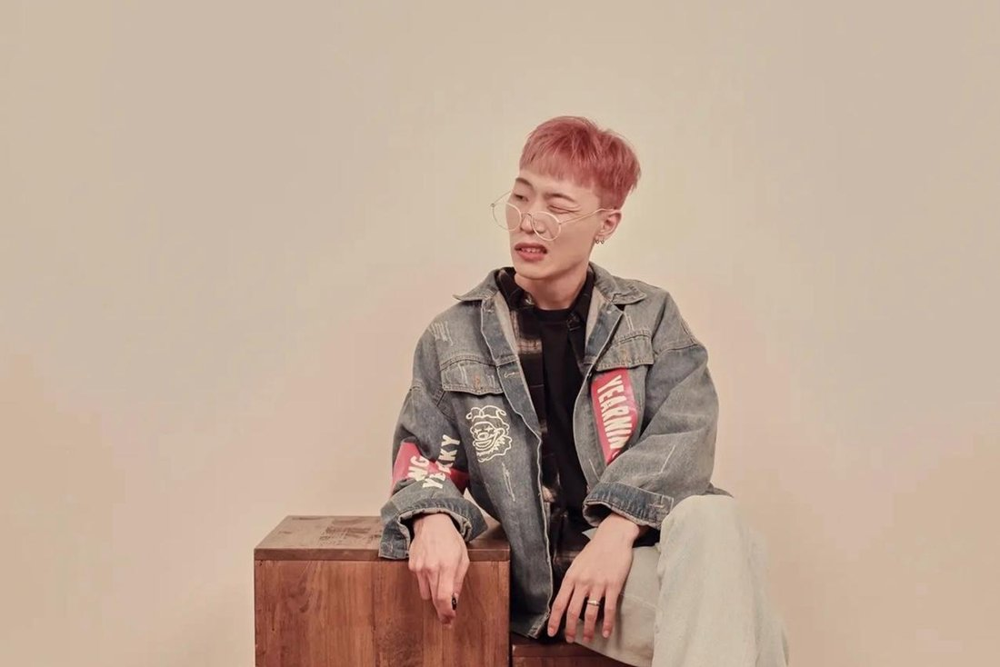
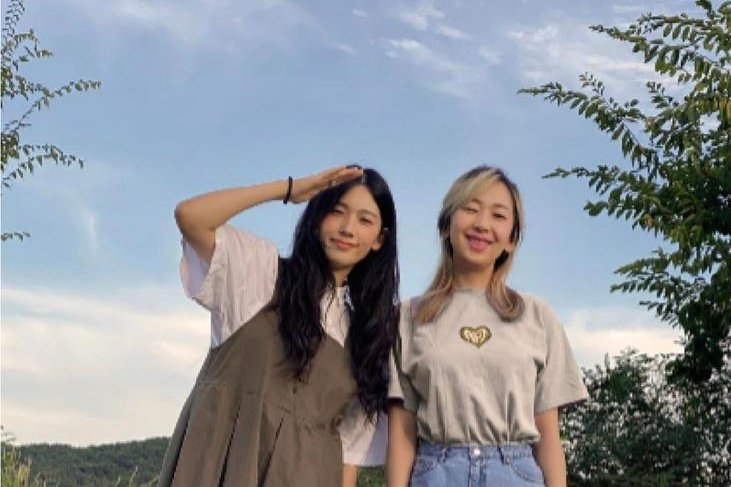
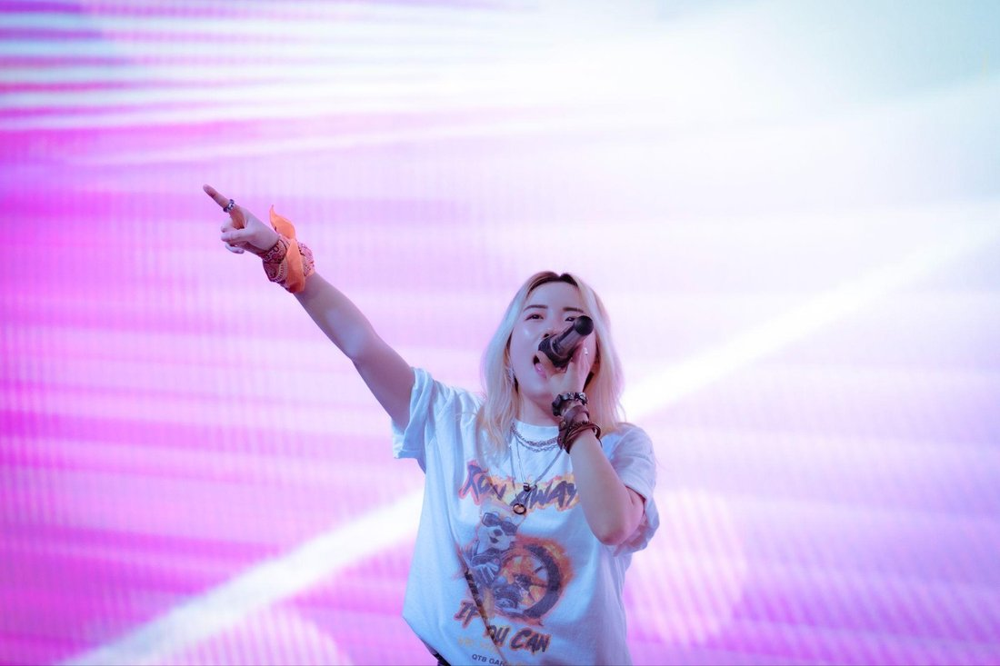
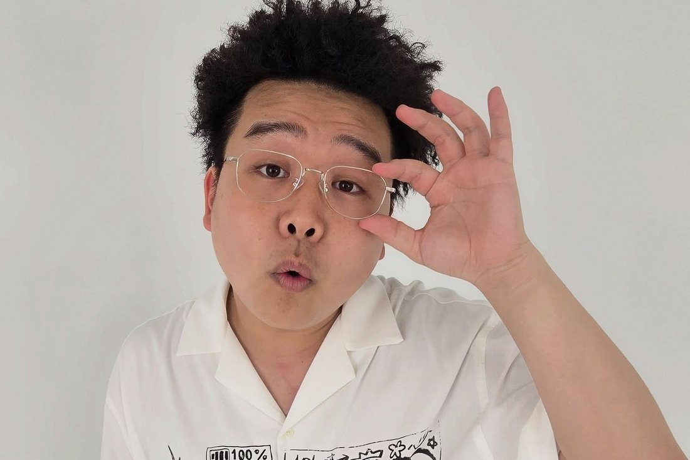
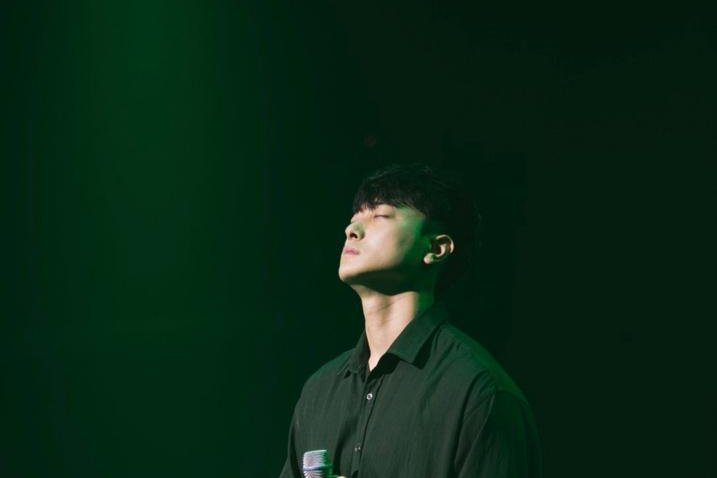
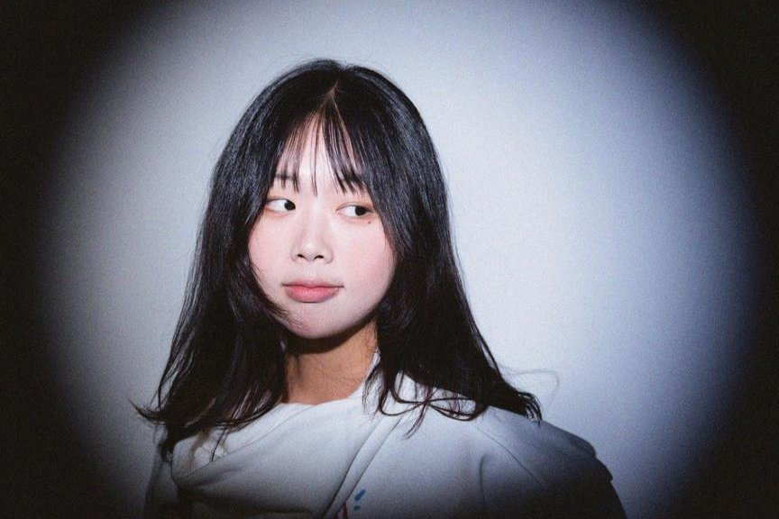

발라드·R&B 보컬

BluJin
R&B·팝 보컬
R&B의 부드러운 감성과 팝의 멜로디, 일렉트로닉 사운드를 오가는 보컬리스트입니다. 송년회나 파티처럼 분위기를 띄워야 하는 자리에 잘 맞습니다.
- 잘 맞는 자리
- 송년회·기업 행사, 콘서트·공연 오프닝, 위문공연·파티
- 공연 구성
- MR 반주 또는 밴드 편성(협의)
- 행사 성격에 맞춘 셋리스트 구성
- 주요 무대
- 2026 싱글 'Dream Paradise' 발매
- 2025 어썸기타 공연
- 2024 김범수 전국투어 'The Original' 콘서트 무대

싱어송라이터·어쿠스틱



삼치와 이기리
자매 포크 듀오 · 싱어송라이터
친자매 두 사람이 꾸리는 싱어송라이터 포크 듀오입니다. 솔직한 가사와 중독성 있는 멜로디로 관객과 가까운 무대를 만듭니다.
- 잘 맞는 자리
- 기업·기관 공감 콘서트, 지역 축제·맥주 축제, 야외 버스킹 무대
- 공연 구성
- 2인 어쿠스틱 포크 편성
- 자작곡 중심 셋리스트
- 행사 시간에 맞춘 공연 길이 협의
- 주요 무대
- 아리랑TV 'LIVE ON' 출연
- 기업 주최 '설렘콘서트' 출연
- 송도맥주축제 공연
록·팝 록

오뮤오
록 보컬 · 가수
록을 바탕으로 90년대 댄스곡까지 시원하게 소화하는 보컬입니다. MBN '쇼킹나이트'에서 TOP3에 올랐고, 지역 축제와 대학 축제 무대에 자주 섭니다.
- 잘 맞는 자리
- 지역 축제·맥주 축제 메인 무대, 대학 축제, 기업·호텔 행사 축하공연, 군부대 위문공연
- 공연 구성
- 솔로: 90년대 스타일부터 시원한 록까지
- 댄서와 함께하는 90년대 댄스 무대
- 3인 밴드 또는 5~6인 풀밴드 록 공연
- 주요 무대
- MBN '쇼킹나이트' TOP3, 쇼킹나이트 콘서트(서울·부산) 출연
- SBS '판타스틱 듀오 2' 출연
- 2023 문화가 흐르는 서울광장 초대가수

ZIMIN
싱어송라이터 · 팝 록 보컬
작사·작곡·편곡까지 직접 하는 싱어송라이터입니다. 팝 록과 모던 록, 발라드를 노래하며 버스킹부터 축제·해외 행사까지 250회 넘는 무대에 섰습니다.
- 잘 맞는 자리
- 축제·지역 행사 초청 공연, 기관·기업 행사 축하공연, 대학 축제·청년 행사
- 공연 구성
- 자작곡과 커버곡으로 셋리스트 구성
- 팝 록·모던 록·발라드 중 행사 분위기에 맞춘 곡 선정
- 행사 시간에 맞춘 공연 길이 협의
- 주요 무대
- 2026 모스크바 'K-Food Fair in Moscow' 초청 공연
- 2026 '청렴·공감 콘서트' 초청 공연
- 2026 '성북 북적북적 청년상생마켓' 초청 공연
힙합


OTWO
래퍼 · 청춘 공감 힙합
보통의 청춘과 삶을 노래하는 래퍼입니다. 솔직한 가사와 에너지 넘치는 무대로 관객과 공감하며 소통합니다.
- 잘 맞는 자리
- 청년 축제·대학 축제, e스포츠·게임 행사, 지역 축제 무대
- 공연 구성
- 자작곡 중심 힙합 무대
- 관객 호응을 이끄는 라이브 퍼포먼스
- 행사 시간에 맞춘 셋리스트
- 주요 무대
- 2025 대전 0시 축제 공연
- 2025 진해 군항제 공연
- 2025 파주 K-Culture 페스티벌 초청공연
트롯·뮤지컬

어린이·가족 공연

DJ·파티
DJ 키시
EDM DJ · 파티 믹스셋
트렌디한 EDM·하우스·페스티벌 사운드로 파티 분위기를 끌어올리는 DJ입니다. 코스튬 콘셉트와 비주얼 연출로 무대 몰입도를 높입니다.
- 잘 맞는 자리
- 축제 야간 파티 무대, 할로윈·연말 시즌 파티, 브랜드·기업 파티
- 공연 구성
- EDM·빅룸·하우스 믹스셋
- 할로윈 등 테마 콘셉트 공연
- 관객 참여를 이끄는 진행